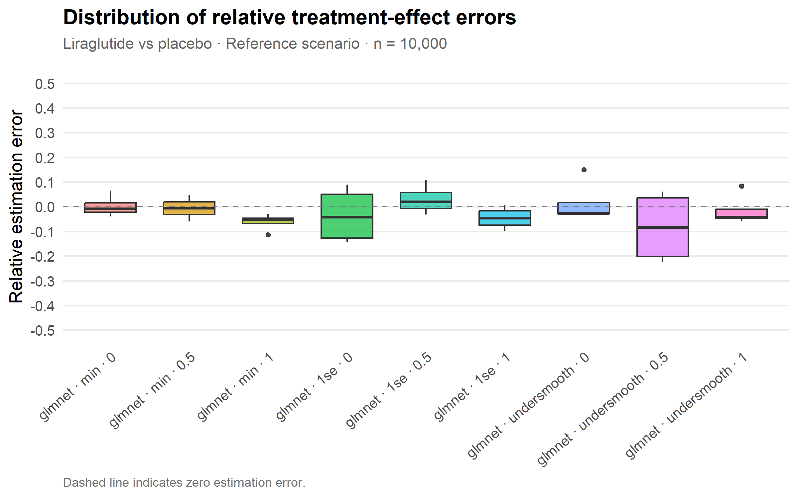
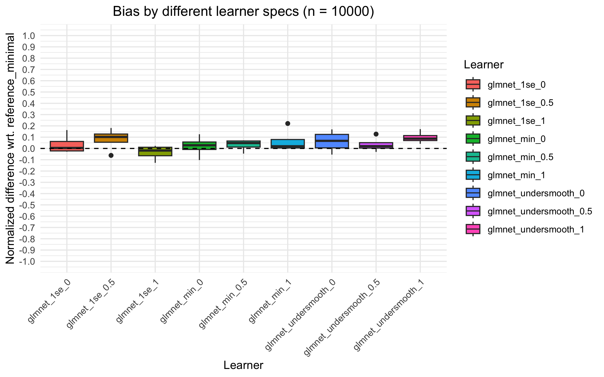

rTMLE simulation study
An investigation of the bias in estimation of treatment-specific risks
1. Introduction
This study investigates the performance of a longitudinal targeted maximum likelihood estimation (rTMLE) implemented in R on simulated cohorts. The primary objective is to evaluate the bias of this model, compared to the true* risk, in increasingly complicated reference scenarios. The hope is to recreate and validate models performance on LEADER-like data.
Points of interest include; confounding, censoring, …
Note to Thomas - at some point analyses will be outlined in detail in each of their own docs, while all important results will be here on main page.
2. Methods
The general framework is to generate a "register"-like cohort subject to two
different treatments (distributed based on the actual reference scenario) and
compare the rTMLE estimate on the difference in risk between the two treatment
protocols. The scenario treats treatment (lira) and placebo (placebo)
with the evaluated protocols being (at least for now) only one or the
other. Don't remember the exact structure of the LEADER data but i suspect there
are competing treatments as well (metformin) which could be included to look at
a protocol with the combined effect of the two in reference to the placebo.
2.1. Data-generating mechanism
Setting (variables, events and their distributions), Hooks, simulate_cohort. Maybe start everything with leader like data - just no effects yet - thoughts Thomas?
Right now there are two available settings. The minimal with limited amount of variables, and a LEADER setting with every variable of the actual study included with distributions that seemed to make sense to me.
The main difference is the fact that the minimal is limited in time to baseline, one visit, and an outcome. However am considering to just have everything be LEADER based but change the scenario through the visit_schedule and max_follow i.e. by varying the included time interval.
2.2. Performance measures
Two primary performance measures are considered in the simulation study: bias and root mean squared error (RMSE). These measures are used to evaluate the accuracy of the estimators relative to the true parameter or a specified reference value.
Let \(\hat{\theta}_n(t)\) denote the estimate obtained in simulation run \(n\) at time \(t\), and let \(\theta(t)\) denote the corresponding true parameter. The total number of simulation runs is denoted by \(N\). Bias describes the systematic deviation of an estimator from the true parameter. At a given time point \(t\), it is defined as
\[ \boxed{ \operatorname{Bias}(\hat{\theta}(t)) = E[\hat{\theta}(t)] - \theta(t) } \]
where \(E[\hat{\theta}(t)]\) denotes the expected value of the estimator. In practice the bias will be looked at run-by-run. To express the bias relative to the magnitude of the true parameter, the relative bias is defined as
\[ \boxed{ \widehat{\operatorname{Relative\ Bias}}(t) = \frac{ E[\hat{\theta}_n(t)] - \theta(t) }{|\theta(t) |}} \]
This provides a proportional measure of systematic estimation error, provided that \(\theta(t) \neq 0\). A positive relative bias indicates overestimation, while a negative relative bias indicates underestimation. RMSE measures the overall magnitude of estimation error across simulation runs, accounting for both systematic bias and variability between estimates.
For a specified reference value \(\theta^*(t)\), the RMSE is calculated as
\[ \boxed{ \operatorname{RMSE}(t;\theta^*) = \sqrt{ \frac{1}{N} \sum_{n=1}^{N} \left( \hat{\theta}_n(t) - \theta^*(t) \right)^2 } } \]
Here, \(\theta^*(t)\) represents the reference value at time \(t\), which may be the true parameter or an approximation obtained from a separate set of simulations. Similarly, the relative RMSE is defined as
\[ \boxed{ \operatorname{Relative\ RMSE}(t;\theta^*) = \sqrt{ \frac{1}{N} \sum_{n=1}^{N} \left( \frac{ \hat{\theta}_n(t) - \theta^*(t) }{|\theta^*(t)|}\right)^2}} \]
This expresses the RMSE as a proportion of the magnitude of the reference value, provided that \(\theta^*(t) \neq 0\).
2.2.1. Interpretation
Both bias and RMSE are included to provide complementary assessments of estimator performance. Bias quantifies systematic overestimation or underestimation, whereas RMSE captures the overall magnitude of estimation errors, incorporating both bias and variability.
The relative versions of these measures allow estimation errors to be interpreted proportionally to the magnitude of the true parameter or reference value, facilitating comparisons across scenarios with different parameter magnitudes.
All comparisons are performed at the same discrete time point \(t\), ensuring that estimates and their corresponding reference values represent the same follow-up period.
Throughout the simulation study, the term risk may be used as shorthand for the difference in cumulative risk between the two treatment protocols, unless otherwise specified.
2.3. Evaluating true* risk (TR)
Large cohort. Maybe RMSE from mean for increasing sample size is a good plot here (should just be necessary for one t0). To evaluate the appropriate sample size of a cohort that allows calculating the actual risk the RMSE between a naive (but true) risk estimate and its mean over a number of runs for increasing sample sizes. The assumption is that the result converges well enough* toward the true value at some finite sample size.

Similarly if we change the reference to a different time (will include these as well - suspect convergence will happen quicker w.r.t. increases in sample size.
2.4. Additional important parameters
time-step of risk assesment \(t_{0}\) number of covariates \(p\) number of time-dependent covariates \(p_{t}\) censoring \(CENS\) true or false competing risk \(COMP\) true or false number of initial confounding variables \(c\) number of time-dependent confounding variables \(c_{t}\)
3. Simulation results
The reference scenario considers two treatment protocols, LIRA and PLACEBO, with death as the outcome.
Inspect scenario
Non-zero parameters (6)
Effects
effect_lira_death | -1 |
Event scales
scale_death | 0.1 |
scale_nausea.and.vomiting.symptoms | 0.01 |
Means
Variances
var_age | 1 |
var_hba1c | 1 |
var_hba1c_change | 1 |
Other parameters
Visit schedule
Visit scheduling
mean | 1 |
sd | 0 |
skip | 0 |
schedule | 0, 1, 2, 3, 4, 5, 6, 7, 8, 9, 10 |
minimum_time_between_visits | 0 |
Example individual (ID: 1)
| id | time | event | sex | age | hba1c | nausea.and.vomiting.symptoms | hba1c_change | randomized_treatment | lira | placebo |
|---|---|---|---|---|---|---|---|---|---|---|
| 1 | 0.0 | baseline | 0 | -0.7621143 | 0.3604253 | 0 | 0.0000000 | 1 | 1 | 0 |
| 1 | 1.0 | visit | 0 | -0.7621143 | 0.3604253 | 0 | -0.8911201 | 1 | 1 | 0 |
| 1 | 1.9 | dropout | 0 | -0.7621143 | 0.3604253 | 0 | -1.1589249 | 1 | 1 | 0 |


Then, an additional absorbing outcome (censoring) is introduced in the form of dropout. The


Then, confounding.
Then, both censoring and confounding.
4. Discussion
Interpretation of the simulation results.
5. Conclusions
Summary of the main findings.